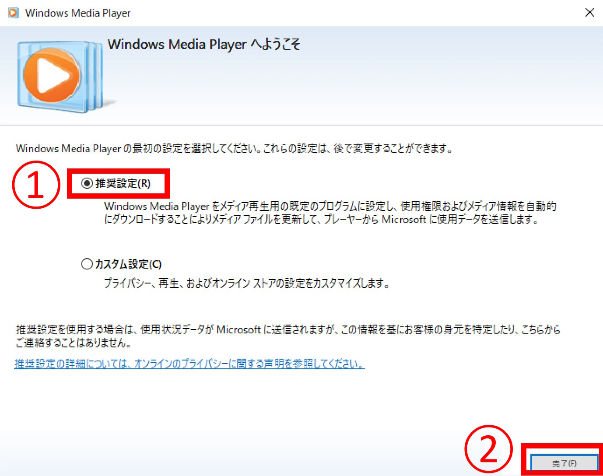
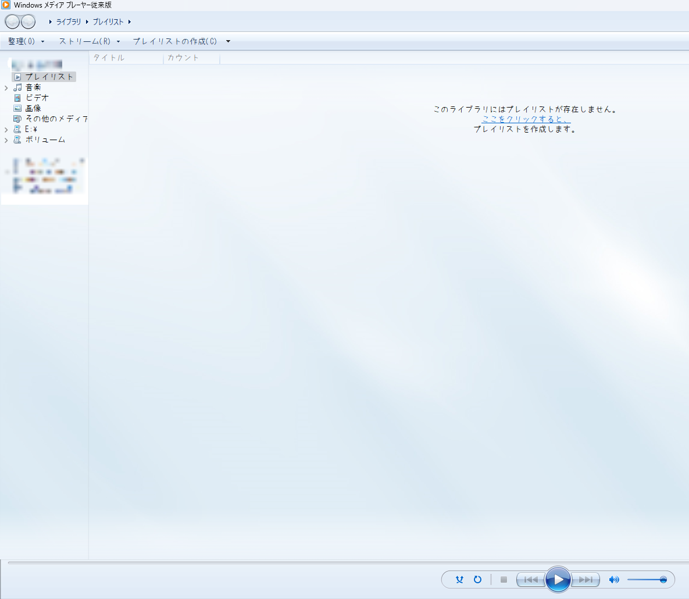
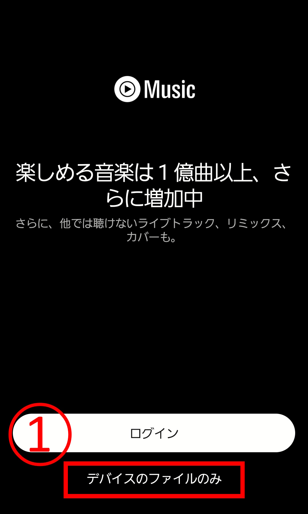
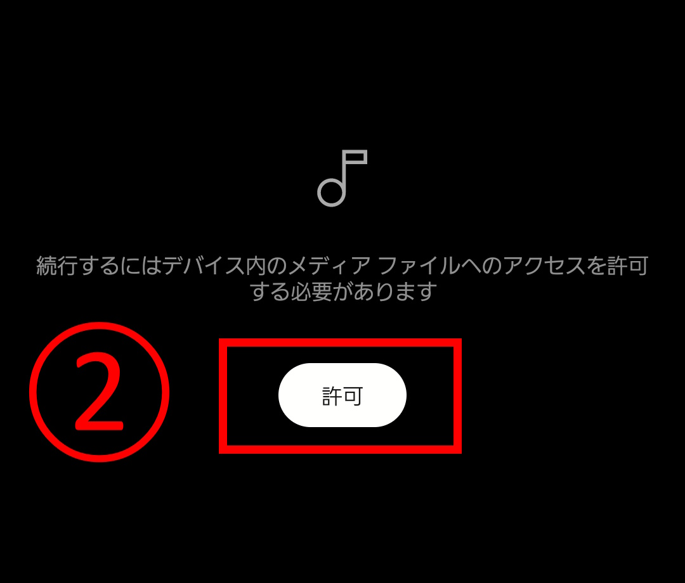
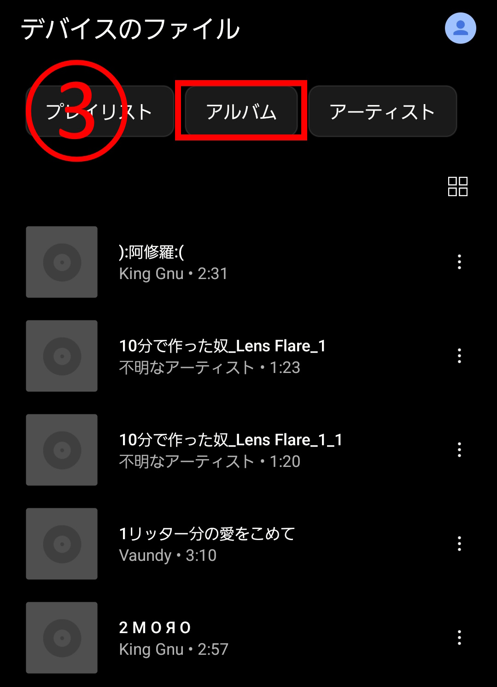

1. PCに光学ドライブを接続する
PCを起動し、光学ドライブを接続しておきます。
PCを起動し、光学ドライブを接続しておきます。
検索窓に ”Windows Media Player” と入力して開きます。

推奨設定を選択して完了を押します。
このような画面になります。
Windows Madia Playerが開いたら、光学ドライブにCDを入れて読み込みます。
読み込み中...
4番の取り込みのオプション設定へ続いてください。
CDの読み込みが終わると内容が表示されます。

次に、画像のように上部の “取り込みの設定” → “形式” → “MP3” に設定します。

下の画像の"①"にチェックを入れます。

CDの取り込み"②"をクリックして、すべて取り込み終わるまで待ちます。
エクスプローラーを新しく開き、Musicフォルダを開きます。

取り込んだ音楽はここにあります。

続いて、スマートフォンとPCを接続します。
下の画像のようなポップアップが出てくるので、クリックして"デバイスを開いてファイルを表示する"を押します。

もう1つエクスプローラーが立ち上がるので、下の画像のように内部共有ストレージ →Musicの中に取り込んだ音楽をコピーします。


今回はYouTube Musicを使いますが、既にインストールされている場合は飛ばして構いません。
スマートフォンで、プレイストアからYouTube Musicをインストールします。
アプリを開き、下の画像に従ってください。
  アルバムを押すと取り込んだ音楽が入っています。